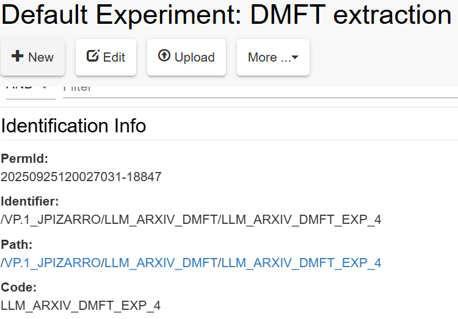

Part 1 - Basic pyBIS introduction
In openBIS, there are two main modes in which data is defined by users for storage in the platform:
- Manual annotation of data via the Graphical User Interface (GUI).
- Automated data ingestion via an Application Programming Interface (API).
In this part, you will learn the basics of the openBIS API in Python, also called pyBIS.
Tip
We recommend the reader to launch a Jupyter Notebook in a Python environment with pyBIS installed, and run the commands shown throughout the next sections.
Initial Setup: Connecting to openBIS¶
The first step to start using pyBIS is to connect to the specific instance where we will work.
We can define some variables:
Warning
Note that you must not openly distribute the URL, as well as your USERNAME and PASSWORD. In case you are working in open repositories (e.g., in GitHub), ,ake sure that, before pushing content, these are deleted or anonymized. There are other safer implementations to define such variables (e.g., secret environments) which can help you manage your username and passwords securely.
You can log in openbis with:
After a few seconds, o will connect with your credentials to the openBIS instance specified in URL.
We can check if the session is active:
Or check the openBIS version:
We can also define a personal access token (PAT):
And use it for login instead of the username and password
Exploring openBIS Available Folders and Entities¶
In openBIS, we organize data following the structure: Space > Projects > Collections (optional) > Objects. Spaces and Projects are folder-like structure where to store the research workflow we did. This research workflow is described by Objects and the parent-child relationships defined between them. Collections are an optional way of grouping multiple objects under the same category.
Besides this structure, Datasets (i.e., entities containing raw data like files) can be attached to Objects (or Collections) to store the raw data out of which metadata was defined.
In this sub-section, you will see how to use pyBIS to explore the available Spaces, Projects, (Collections,) and Objects in the openBIS instance o. This will help later when building the data model with Objects and their parent-child relationships (see Part 2 - Advanced pyBIS features).
Spaces and Projects¶
We can get all the available Spaces in an openBIS instance by doing:
When we want to work inside a specific Space, we can use its code and create a variable as:
We can then get a specific project from that space:
Similarly to Spaces, we can know the available projects defined in an instance:
my_project will define the Project folder where we can store data.
Hint
Note that the plural (get_spaces, get_projects) is used on an Openbis instance to return the available folders in that instance. The singular is then used to define one single folder (space, project) of the available ones.
Collections¶
We can list all collections in an instance, space, or project by respectively doing:
We can also specify one based on the path:
If you don't know the path, you can either find the one when calling get_collections() or, go to your openBIS instance and check a Collection metadata:

You can also use the permID:
Objects and Datasets¶
Objects are also found equivalently to Collections, with the exception that Objects might also be grouped inside a Collection:
Similarly, using the specific path or permID:
my_object = o.get_object("/<SPACE-CODE>/<PROJECT-CODE>/<COLLECTION-CODE>/<OBJECT-CODE>")
# Alternative 1 (in case the Object is directly under Project):
# my_object = o.get_object("/<SPACE-CODE>/<PROJECT-CODE>/<OBJECT-CODE>")
# Alternative 2:
# my_object = o.get_object(permID)
Datasets follow the same functionalities with get_datasets() and get_dataset(), and can be attached to Collections or Objects. We can also download a specific dataset (e.g., defined by a permID):
And even specify the path directory where to download: